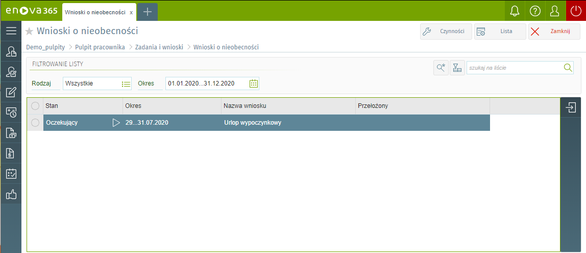

Wnioski o nieobecności
Formularz zawiera listę wprowadzonych wniosków o nieobecności w trybie podglądu. Wnioski można filtrować przy pomocy dostępnych filtrów:
Rodzaj – Każdy z wniosków może posiadać odpowiedni status, w zależności od tego czy dany wniosek został już zaakceptowany przez przełożonego mogą one przyjmować następujące stany:
Wszystkie – wszystkie wnioski o nieobecności niezależnie, jaki stan posiadają.
Oczekujące – wnioski o nieobecności wprowadzone przez użytkownika, ale niezaakceptowane przez przełożonego.
Zaakceptowane – wnioski zaakceptowane przez przełożonego
Odrzucone - jeżeli przełożony nie zaakceptuje danego wniosku.
Anulowane - jeżeli dany wniosek zostanie anulowany przez użytkownika.
Okres – okres, za jaki chcemy przeglądać listę wniosków, w formacie: „data…data”, na przykład: 2002-01-01…2002-12-31. W filtrze 'Okres' domyślnie jest ustawiona wartość 'wszystko', czyli na liście będą wyświetlane zadania, które nie zostały jeszcze zrealizowane.

Inne wnioski
Lista innych wniosków służy do ewidencji i wyświetlania innych wniosków, które są definiowane na etapie wdrożenia.